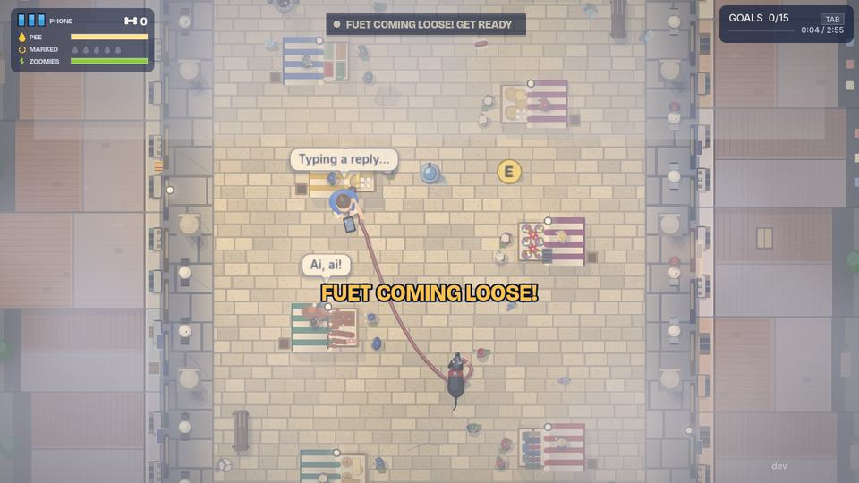
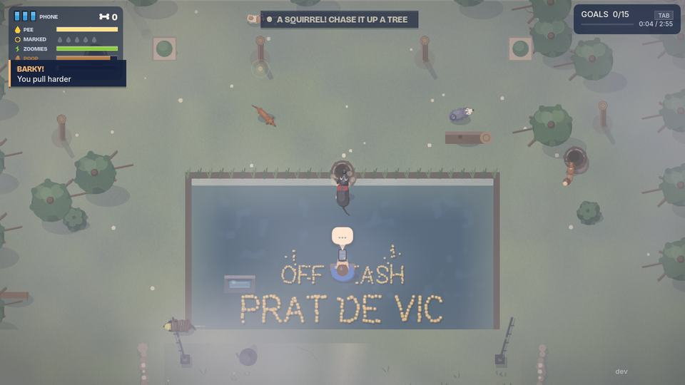

Fog, arcades and hanging fuet
The inland market town on a winter morning in thick fog: narrow stone streets into the arcades of the Mercadal, where fuet hangs from the stalls, past the cathedral's bell tower and over the old bridge on the Mèder. When a fuet drops and rolls, carry it back to its stall, and find your human again in the fog.

